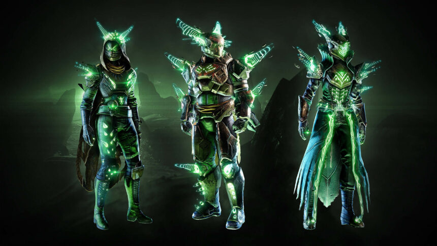

Destiny 2 un looter shooter de primera persona, este juego que lleva ya 9 años en el mercado siendo uno de los mejores en terminos de jugabilidad, gráficos y entretenimiento incluyendo contenindo desafiante para jugadores de pvp (crisol, estandarte de hierro y osiris) a su vez de pve (peleas contra IA de bajo nivel hasta asaltos gran maestro.)
Hace poco un parche fue introducido debido al exploit de algunos jugadores, es decir, utilizaron bugs por los cuales se podían modificar los armazones de las armas para crear conbinaciones "ilegales" dentro del juego y la mecánica.
Se trajo de vuelta la armadura de "los momentos de triunfo" de Destiny a Destiny 2 junto a las nueva actividad la Caida de Crota siendo esta una de las Raids más dificiles de completar en día uno con solo alrededor de 1000 complecciones.
